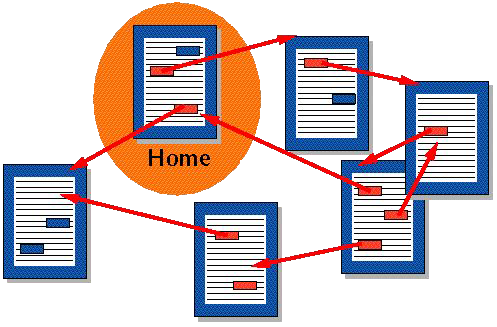
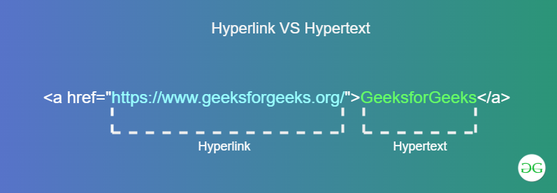
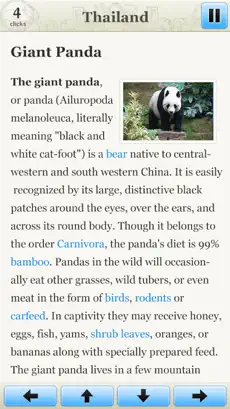
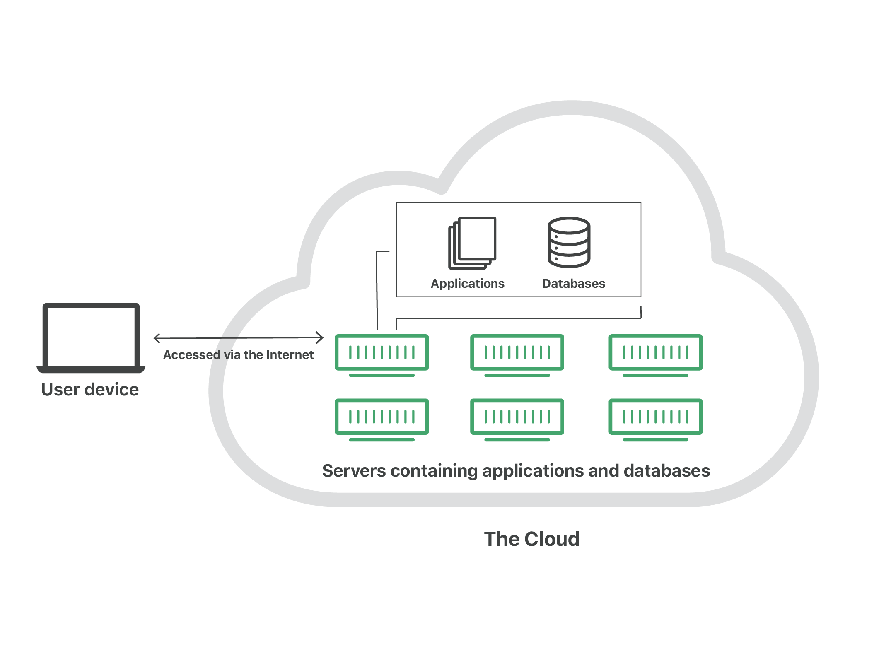
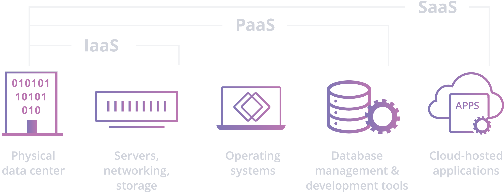
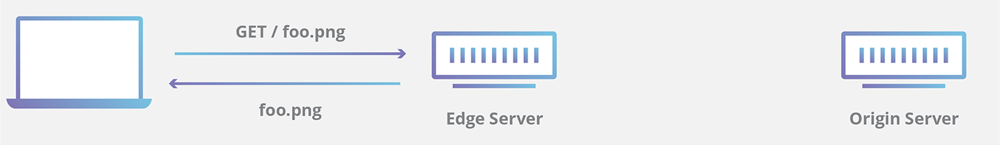
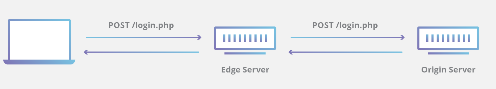
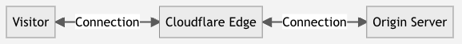
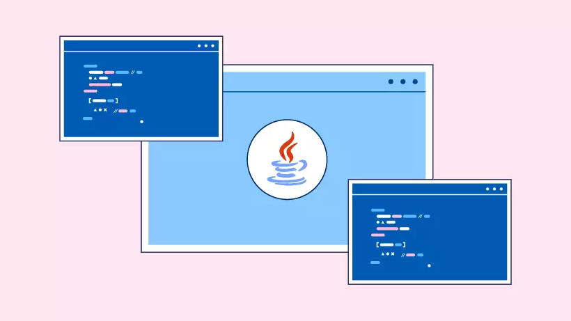

- IP Internet Protocol (a global addressing mechanism)
-
URI
Uniform Resource Identifier
- URL Uniform Resource Locator
- URN Uniform Resource Nane
- ISP Internet Service Provider
- CDN Content Delivery Network
- FTP File Transfer Protocol
- TCP Transmission Control Protocol
- SNSs Social Networking Sites
- NSFNET National Science Foundation Network (a national “backbone” network originally connecting five supercomputing centres at Princeton University, University of Pittsburgh, University of California - San Diego, University of Illinois, and Cornell University.)
Computer Basics
What is a mainframe computer?
Mainframe computer, informally called a mainframe or big iron, is a computer used primarily by large organizations for critical applications like bulk data processing for tasks such as censuses, industry and consumer statistics, enterprise resource planning, and large-scale transaction processing.
The Internet
How to connect to the internet?
Read more
- Internet Basics by GCF
- Internet and its related issues by Britannica
- How to buy a router
Netscape Communications Corporation (originally Mosaic Communications Corporation) was an American independent computer services company with headquarters in Mountain View, California and then Dulles, Virginia.
Its Netscape web browser was once dominant but lost to Internet Explorer and other competitors in the so-called first browser war, with its market share falling from more than 90 percent in the mid-1990s to less than 1 percent in 2006.
An early Netscape employee Brendan Eich created the JavaScript programming language, the most widely used language for client-side scripting of web pages and a founding engineer of Netscape Lou Montulli created HTTP cookies. The company also developed SSL which was used for securing online communications before its successor TLS took over.
Keynote by Brenda Eich, creator of JavaScript, at BrazilJS Conf 2015

Lou Montulli

Lynx, text web browser
Lou Montulli is a computer programmer who is well known for his work in producing web browsers. In 1991 and 1992, he co-authored a text web browser called Lynx, with Michael Grobe and Charles Rezac, while he was at the University of Kansas. This web browser was one of the first available and is still in use today.



Hypertext is text displayed on a computer display or other electronic devices with references (hyperlinks) to other text that the reader can immediately access.
Hypertext documents are interconnected by hyperlinks, which are typically activated by a mouse click, keypress set, or screen touch. Apart from text, the term "hypertext" is also sometimes used to describe tables, images, and other presentational content formats with integrated hyperlinks.
Hypertext is one of the key underlying concepts of the World Wide Web, where Web pages are often written in the Hypertext Markup Language (HTML). As implemented on the Web, hypertext enables the easy-to-use publication of information over the Internet.
HyperText and HyperMedia are concepts, not products.
Types and uses of hypertext
Hypertext documents can either be static (prepared and stored in advance) or dynamic (continually changing in response to user input, such as dynamic web pages). Static hypertext can be used to cross-reference collections of data in documents, software applications, or books on CDs. A well-constructed system can also incorporate other user-interface conventions, such as menus and command lines. Links used in a hypertext document usually replace the current piece of hypertext with the destination document. A lesser known feature is StretchText, which expands or contracts the content in place, thereby giving more control to the reader in determining the level of detail of the displayed document. Some implementations support transclusion, where text or other content is included by reference and automatically rendered in place.
Hypertext can be used to support very complex and dynamic systems of linking and cross-referencing. The most famous implementation of hypertext is the World Wide Web, written in the final months of 1990 and released on the Internet in 1991.
Engineer Vannevar Bush wrote "As We May Think" in 1945 in which he described the Memex, a theoretical proto-hypertext device which in turn helped inspire the subsequent invention of hypertext.
Hypertext Editing System (HES) IBM 2250 Display console – Brown University 1969
In 1963, Ted Nelson coined the terms 'hypertext' and 'hypermedia' as part of a model he developed for creating and using linked content.
He later worked with Andries van Dam to develop the Hypertext Editing System (text editing) in 1967 at Brown University. It was implemented using the terminal IBM 2250 with a light pen which was provided as a pointing device.[8] By 1976, its successor FRESS was used in a poetry class in which students could browse a hyperlinked set of poems and discussion by experts, faculty and other students, in what was arguably the world's first online scholarly community[9] which van Dam says "foreshadowed wikis, blogs and communal documents of all kinds".
The Wiki Game
A game of exploring and racing through Wikipedia articles! Fun and surprise await as you go down the "Wikipedia rabbit hole".

What is the Cloud?
"The cloud" refers to servers that are accessed over the Internet, and the software and databases that run on those servers. Cloud servers are located in data centers all over the world. By using cloud computing, users and companies do not have to manage physical servers themselves or run software applications on their own machines.
The cloud enables users to access the same files and applications from almost any device, because the computing and storage takes place on servers in a data center, instead of locally on the user device. This is why a user can log in to their Instagram account on a new phone after their old phone breaks and still find their old account in place, with all their photos, videos, and conversation history. It works the same way with cloud email providers like Gmail or Microsoft Office 365, and with cloud storage providers like Dropbox or Google Drive.
For businesses, switching to cloud computing removes some IT costs and overhead: for instance, they no longer need to update and maintain their own servers, as the cloud vendor they are using will do that. This especially makes an impact for small businesses that may not have been able to afford their own internal infrastructure but can outsource their infrastructure needs affordably via the cloud. The cloud can also make it easier for companies to operate internationally, because employees and customers can access the same files and applications from any location.
How does cloud computing work?
Cloud computing is possible because of a technology called virtualization. Virtualization allows for the creation of a simulated, digital-only "virtual" computer that behaves as if it were a physical computer with its own hardware. The technical term for such a computer is virtual machine. When properly implemented, virtual machines on the same host machine are sandboxed from one another, so they do not interact with each other at all, and the files and applications from one virtual machine are not visible to the other virtual machines even though they are on the same physical machine.
Virtual machines also make more efficient use of the hardware hosting them. By running many virtual machines at once, one server can run many virtual "servers," and a data center becomes like a whole host of data centers, able to serve many organizations. Thus, cloud providers can offer the use of their servers to far more customers at once than they would be able to otherwise, and they can do so at a low cost.
Even if individual servers go down, cloud servers in general should be always online and always available. Cloud vendors generally back up their services on multiple machines and across multiple regions.
Users access cloud services either through a browser or through an app, connecting to the cloud over the Internet — that is, through many interconnected networks — regardless of what device they are using.
What are the main service models of cloud computing?
Software-as-a-Service (SaaS) Instead of users installing an application on their device, SaaS applications are hosted on cloud servers, and users access them over the Internet. SaaS is like renting a house: the landlord maintains the house, but the tenant mostly gets to use it as if they owned it. Examples of SaaS applications include Salesforce, MailChimp, and Slack.
Platform-as-a-Service (PaaS) In this model, companies don't pay for hosted applications; instead they pay for the things they need to build their own applications. PaaS vendors offer everything necessary for building an application, including development tools, infrastructure, and operating systems, over the Internet. PaaS can be compared to renting all the tools and equipment necessary for building a house, instead of renting the house itself. PaaS examples include Heroku and Microsoft Azure.
Infrastructure-as-a-Service (IaaS) In this model, a company rents the servers and storage they need from a cloud provider. They then use that cloud infrastructure to build their applications. IaaS is like a company leasing a plot of land on which they can build whatever they want — but they need to provide their own building equipment and materials. IaaS providers include DigitalOcean, Google Compute Engine, and OpenStack.
Formerly, SaaS, PaaS, and IaaS were the three main models of cloud computing, and essentially all cloud services fit into one of these categories. However, in recent years a fourth model has emerged:
Function-as-a-Service (FaaS) FaaS, also known as serverless computing, breaks cloud applications down into even smaller components that only run when they are needed. Imagine if it were possible to rent a house one little bit at a time: for instance, the tenant only pays for the dining room at dinner time, the bedroom while they are sleeping, the living room while they are watching TV, and when they are not using those rooms, they don't have to pay rent on them.
FaaS or serverless applications still run on servers, as do all these models of cloud computing. But they are called "serverless" because they do not run on dedicated machines, and because the companies building the applications do not have to manage any servers.
Also, serverless functions scale up, or duplicate, as more people use the application — imagine if the tenant's dining room could expand on demand when more people come over for dinner! Learn more about serverless computing (FaaS).
What are the different types of cloud deployments?
In contrast to the models discussed above, which define how services are offered via the cloud, these different cloud deployment types have to do with where the cloud servers are and who manages them.
The most common cloud deployments are:
- Private cloud A private cloud is a server, data center, or distributed network wholly dedicated to one organization.
- Public cloud A public cloud is a service run by an external vendor that may include servers in one or multiple data centers. Unlike a private cloud, public clouds are shared by multiple organizations. Using virtual machines, individual servers may be shared by different companies, a situation that is called "multitenancy" because multiple tenants are renting server space within the same server.
- Hybrid cloud hybrid cloud deployments combine public and private clouds, and may even include on-premises legacy servers. An organization may use their private cloud for some services and their public cloud for others, or they may use the public cloud as backup for their private cloud.
- Multi-cloud multi-cloud is a type of cloud deployment that involves using multiple public clouds. In other words, an organization with a multi-cloud deployment rents virtual servers and services from several external vendors — to continue the analogy used above, this is like leasing several adjacent plots of land from different landlords. Multi-cloud deployments can also be hybrid cloud, and vice versa.
How is the cloud different from the traditional client-server model of the Internet?
The Internet has always been made up of servers, clients, and the infrastructure that connects them. Clients make requests of servers, and servers send responses. Cloud computing differs from this model in that cloud servers are not just responding to requests — they are running programs and storing data on the client's behalf.
Why is it called 'the cloud'?
"The cloud" started off as a tech industry slang term. In the early days of the Internet, technical diagrams often represented the servers and networking infrastructure that make up the Internet as a cloud. As more computing processes moved to this servers-and-infrastructure part of the Internet, people began to talk about moving to "the cloud" as a shorthand way of expressing where the computing processes were taking place. Today, "the cloud" is a widely accepted term for this style of computing.
What about containers? Are containers IaaS, PaaS, SaaS, or FaaS?
Like virtual machines, containers are a cloud virtualization technology. They are part of the PaaS (Platform-as-a-Service) cloud model. Virtualization for containers occurs one abstraction layer up from where it occurs for virtual machines, at the operating system level instead of at the kernel level (the kernel is the foundation of the operating system, and it interacts with the computer's hardware). Each virtual machine has its own operating system kernel, but containers on the same machine share the same kernel.
When something is in the cloud, it means it's stored on Internet servers instead of your computer's hard drive.
The purpose of an origin server is to process and respond to incoming internet requests from internet clients. The concept of an origin server is typically used in conjunction with the concept of an edge server or caching server. At its core, an origin server is a computer running one or more programs that are designed to listen for and process incoming internet requests. An origin server can take on all the responsibility of serving up the content for an internet property such as a website, provided that the traffic does not extend beyond what the server is capable of processing and latency is not a primary concern.
The physical distance between an origin server and a client making a request adds latency to the connection, increasing the time it takes for an internet resource such as a webpage to be loaded. The additional round-trip time (RTT) between client and origin server required for a secure internet connection using SSL/TLS also add additional latency to the request, directly impacting the experience of the client requesting data from the origin. By using a Content Distribution Network (CDN) round-trip time is able to be reduced, and the amount of requests to an origin server are also able to be reduced.
What is the difference between an Origin Server and a CDN Edge server
Put simply, CDN edge servers are computers placed in important junctures between major internet providers in locations across the globe in order to deliver content as quickly as possible. An edge server lives inside a CDN on the “edge” of a network and is specifically designed to quickly process requests. By placing edge servers strategically inside of the Internet Exchange Points (IxPs) that exist between networks, a CDN is able to reduce the amount of time it takes to get to a particular location on the Internet.
These edge servers cache content in order to take the load off of one or more origin servers. By moving static assets like images, HTML and JavaScript files (and potentially other content) as close as possible to the requesting client machine, an edge server cache is able to reduce the amount of time it takes for a web resource to load. Origin servers still have an important function to play when using a CDN, as important server-side code such as the database of hashed client credentials used for authentication is typically maintained inside an origin server.
Here's a simple example of how an edge server and an origin server work together to serve up a login page and allow a user to login to a service. A very simple login page requires the following static assets to be downloaded for the webpage to render properly:
- A HTML file for the webpage
- A CSS file for the webpage styling
- Several image files
- Several JavaScript libraries
These files are all static files; they are not dynamically generated and are the same for all visitors to the website. As a result, these files can be both cached and served to the client from the edge server. All of these files can be loaded closer to the client machine and without any bandwidth consumption by the origin.
Next, when the user enters their login and password and presses “login,” the request for dynamic content travels back to the edge server who then proxies the request back to the origin server. The origin then verifies the user's identity in the associated database table before sending back the specific account information.
This interplay between edge servers handling static content and origin servers serving up dynamic content is a typical separation of concerns when using a CDN. The capability of some CDNs can also extend beyond this simplistic model
Can an origin server still be attacked while using a CDN?
The short answer is yes. A CDN does not render an origin server invincible, but when used properly it can render an origin server invisible, acting as a shield for incoming requests. Hiding the real IP address of an origin server is an important part of setting up a CDN. As such, a CDN provider should recommend that the IP address of the origin server be changed when implementing a CDN strategy in order to prevent DDoS attacks from going around the shield and hitting the origin directly. Cloudflare's CDN includes comprehensive DDoS protection.
Cloudflare
How Cloudflare works
With Cloudflare — meaning your domain or subdomain is using proxied DNS records — DNS lookups for your application’s URL will resolve to Cloudflare Anycast IPs instead of their original DNS target. This means that all requests intended for proxied hostnames will go to Cloudflare first and then be forwarded to your origin server.
Secure your application
Learn more about the tools Cloudflare offers to protect your website against malicious traffic and bad actors. This learning path contains 8 modules and should take you around 6 hours and 45 minutes.
Optimize site speed
Learn more about how Cloudflare can accelerate your website and improve performance. This learning path contains 7 modules and should take you around 3 hours and 20 minutes.
How To Change Git Remote Origin

Change Git Remote URL
In order to change the URL of a Git remote, you have to use the git remote set-url command and specify the name of the remote as well as the new remote URL to be changed.
$ git remote set-url <remote_name> <remote_url>
For example, let’s say that you want to change the URL of your Git origin remote. In order to achieve that, you would use the set-url command on the origin remote and you would specify the new URL.
$ git remote set-url origin https://github.com/kirialilith/kirialilith.git
Congratulations, you successfully changed the URL of your Git remote! In order to verify that the changes were made, you can use the git remote command with the -v option (for verbose)
$ git remote -v
Changing Git Remote to SSH
In some cases, you may have configured your Git repository to use SSH key-based authentication. If you want to change your Git origin remote using SSH authentication, you can use the same git remote set-url command but you will have to use the SSH URL in order to connect.
$ git remote set-url <remote_name> <ssh_remote_url>
$ git remote set-url origin git@github.com:kirialilith/grim.git
How To Generate Git SSH Keys

Platform Independence
Platform independence is a term that describes a technology (usually a ProgrammingLanguage or a FrameWork) that you can use to implement things on one machine and use them on another machine without (or with minimal) changes.
There are two (or three?) basic types of PlatformIndependence:
-
Binary Platform Independence
Languages like Java (JavaLanguage) or Python (PythonLanguage) use a VirtualMachine to run and therefore can be transported from one machine to another in their compiled, binary format. CsharpLanguage seems to be moving in that direction as well, by way of the MonoProject.
-
Source Platform Independence
ANSI C (CeeLanguage) and ANSI C++ (CeePlusPlus) could be considered platform independent to the extent that the source needs no change (or almost no change) to be moved from one type of machine to another. The source needs to be recompiled for each platform. If the programmer adheres to strict ANSI standards, programs in both languages should compile and run nicely on all platforms.
-
ScriptingLanguage / InterpretedLanguage platform independence
PerlLanguage can also be listed here - it doesn't compile into a binary distributable and most Perl programs (especially text based ones) can run on many platforms. There needs to be an interpreter for each platform.
When PlatformIndependence is discussed, usually the three major platforms are concerned : MS Windows, POSIX/Unix, Mac. (Although MacOS is unix. It's only the GUI that's weird. - JasonGrossman)
Software that can run on a variety of hardware platforms or software architectures. Platform-independent software can be used in many different environments, requiring less planning and translation across an enterprise. For example, the Java programming language was designed to run on multiple types of hardware and multiple operating systems. If Java platform-independence becomes a reality, organizations with multiple types of computers will be able to write a specialized application once and have it be used by virtually everyone, rather than having to write, distribute and maintain multiple versions of the same program.
If a Code which is written in any programming language, get executed on any platform or operating system. Such program or language is called platform independent. For e.g. Java is a platform Independent Language. Code written in Java language can get execute on any operating system or platform.
Platform independencemeans that the same program works on any platform (operating system) without needing any modification. In the case of Java the application runs in a Java Virtual Machine which itself isn't platform independent.
Platform Independence simply means that the source code can run on all operating systems.
Independence of the particular Operating System. E.g., a platform independent piece of software can be written using any Operating system, but will run on all of them: UNIX, iOS, Windows.
Read more:
Platform Independent Gui
There are two types of GUI:
Data entry, configuration or monitoring GUI, what we tend to see in the industry
Interactive GUI that has strong shell integration
Strangely enough, most of the software we use everyday falls into the second category, while all the platform-independent GUI frameworks only address the first one.
Platform Portability
Modern PlatformIndependence is something of a working myth. Perhaps a more true/correct terminology would be PlatformPortability. Software, by it's nature, tends to be intimately tied to the details of its' platforms and environments. The platforms themselves, however, may well be machine independent. So-called platform independent languages really tend to be portable platforms themselves. Some systems do support multiple underlying platforms (eg, Direct3D vs OpenGL), which tend to provide equivalent or interchangeable behavior in different environments.
It appears to be an increasing trend for languages and platforms to be unified and portable, rather than having many implementations for different platforms and writing "platform independent" software. Therefore, one might suppose that in the future, all platforms will tend toward machine independence, with varying degrees of fixed-platform hardware and software support (proportional to gross popularity or utility). Then the death of OperatingSystem specific software and the rise of PlatformPortability seems imminent.
Why are some languages called platform dependent if I can always share the source code?
This link provides two very good answers.
Visit kirialilith.com to discover more courses.
Members
15
Angelique

Daizelyn

Ailiseu
ChibiriS

Soya
Kiria
Hestia

Lilibeth
Archie
Stephanie

Aelia
Tiffany

Brittany
Rose-Anne

Louise

Isabella